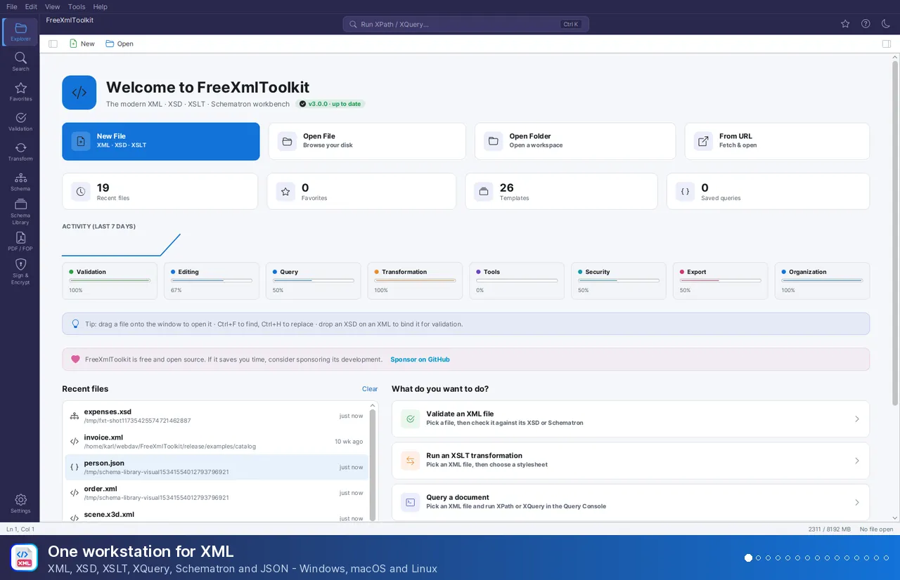

FreeXmlToolkit Documentation¶
Free, open-source desktop app for XML, XSD, XSLT, Schematron and JSON – Windows, macOS and Linux. No registration, no admin rights needed.
Windows x64 · Windows 10/11
Download .exe installer- MSI package – for silent / Group Policy deployment
- Portable ZIP – no installation, extract and run
- Scoop –
scoop install karlkauc/freexmltoolkit
macOS Apple Silicon & Intel
Download .dmg (Apple Silicon)- Intel .dmg – for Intel-based Macs
- .pkg installer (Apple Silicon) · .pkg (Intel)
- Portable ZIP (Apple Silicon) · Portable ZIP (Intel)
- Homebrew –
brew install --cask karlkauc/tap/freexmltoolkit
Linux x64
Download .deb package- .rpm package – Fedora, RHEL, openSUSE
- .deb is for Ubuntu, Debian and Linux Mint
- Portable ZIP – any distribution, extract and run
Welcome¶
FreeXmlToolkit is a free desktop application for working with XML files. It helps you edit, validate, transform, and secure your XML documents - all in one place.


What Can You Do With FreeXmlToolkit?¶
- Edit XML files with smart auto-completion and syntax highlighting
- Validate XML against XSD schemas, DTDs and RELAX NG schemas to check for errors
- Validate JSON against JSON Schemas, auto-detected from the document's
$schemamember - Transform XML into other formats (HTML, PDF, Text)
- Sign XML documents with digital certificates
- Create business rules with Schematron validation
- Generate documentation from your XSD schemas
- Compare and merge XML files by structure, compare folders, convert XML ↔ JSON ↔ YAML
- Open huge files (gigabytes) in the Large File Viewer
- Automate with the command line (
fxt-cli) and projects - Work with AI - an optional AI assistant that checks every answer, and an MCP server for AI agents
- Extend it with plugins — industry plugins for ISO 20022, ebInterface, FinDatEx and XBRL included
- Work in English or German, accessible, centrally administrable
Supported Standards¶
These are the XML-related standards and versions FreeXmlToolkit reads, validates, runs or writes:
| Area | Standard and version | Engine |
|---|---|---|
| XML | XML 1.0 (Fifth Edition), XML 1.1, Namespaces in XML, OASIS XML Catalogs 1.1 | Xerces 2.12 |
| Schemas | XSD 1.0 and 1.1 (assertions, type alternatives, open content, xs:override), DTD, RELAX NG (XML and compact syntax) |
Xerces (XSD 1.1 build), Jing, Trang |
| Business rules | ISO Schematron (query bindings xslt2 and xslt3), Schematron Quick Fixes (SQF) |
ph-schematron / SchXslt on Saxon |
| Transformation | XSLT 1.0, 2.0 and 3.0 | Saxon HE 12 (not schema-aware, no streaming) |
| Query | XPath 1.0 – 3.1, XQuery 1.0 – 3.1, JSONPath | Saxon HE 12, Jayway JsonPath |
| Pipelines and tests | XProc 3.0, XSpec 4 (XSLT, XQuery, Schematron) | XML Calabash 3, XSpec |
| XSL-FO 1.1 (as implemented by Apache FOP), PDF/A-1b; external XSL-FO processors | Apache FOP 2.12 | |
| Security | XML Signature 1.1, XML Encryption 1.1, Canonical XML 1.0 / 1.1, Exclusive XML Canonicalization 1.0 | Apache Santuario 4 |
| JSON and YAML | JSON (RFC 8259), JSON Schema Draft-07, 2019-09 and 2020-12, YAML 1.2 | networknt json-schema-validator, SnakeYAML Engine |
| AI agents | Model Context Protocol (MCP, revisions up to 2025-11-25, stdio) | MCP Java SDK |
Works On All Platforms¶
FreeXmlToolkit runs on Windows (x64), macOS (Apple Silicon and Intel) and Linux (x64) - as an installer, a native package or a portable ZIP, and via Scoop and Homebrew. The Installation page explains every format and the package managers.
Feature Overview¶
XML Editor¶
Edit your XML files with professional tools:
| Feature | What It Does |
|---|---|
| Auto-Completion | Suggests valid elements and attributes as you type |
| Syntax Highlighting | Colors your XML for easier reading |
| Instant Validation | Shows errors immediately as you edit |
| Find & Replace | Search and replace text in your documents |
| Find in Files | Search and replace across all files of a folder - by plain text or by XPath (the Search activity, Ctrl+Shift+F) |
| Code Folding | Collapse sections to focus on what matters |
| Grid View | Edit XML like a spreadsheet in the Graphic view: repeating elements as tables, opened cells, entry helpers, copy/paste with Excel |
| Properties Inspector | View and edit the selected node - and its schema declaration - in every view |
| Query Console | Run XPath 3.1, XQuery 3.1 and JSONPath against the open document (Ctrl+K); Ask AI writes the query from a question |
Learn more: XML Editor Guide | Grid View
JSON Editor¶
Edit and validate JSON files with multiple format support:
| Feature | What It Does |
|---|---|
| Multi-Format Support | Edit .json, .jsonc and .json5 files, including JSONC-style comments and JSON5 syntax |
| Tree View | Navigate JSON structure visually |
| Grid View | Edit JSON in the same grid as XML - arrays of objects as tables, type-aware inline editing, undo/redo |
| JSONPath Queries | Extract data using JSONPath expressions |
| Schema Validation | Validate against JSON Schema (Draft-07, 2019-09, 2020-12) - the schema is auto-detected from the document's $schema member, or bound manually; problems appear with line numbers |
| Hover Information | See JSONPath and type info on hover |
Learn more: JSON Editor Guide
XSD Schema Tools¶
Work with XML Schema files:
| Feature | What It Does |
|---|---|
| Visual Schema Viewer | See your schema as an interactive diagram |
| Documentation Generator | Create HTML documentation from schemas |
| Sample XML Generator | Generate valid sample XML files with customizable rules |
| Profiled Generation | Control values per element, save profiles, batch generate |
| Schema Flattening | Combine multiple schema files into one standalone schema, optionally reduced for validation servers |
| Schema Analysis | Statistics, a type library with one-click removal of unused components, quality checks, identity-constraint and XPath validation - exportable as CSV, JSON, HTML, PDF or Excel |
| Schema Library & XML Catalogs | Map namespaces to schema files, register OASIS catalog.xml files, and manage the cache of downloaded schemas - documents without a schema reference bind automatically |
Learn more: XSD Tools Guide | Profiled XML Generation | XSD Validation | Schema Library
XSLT Transformation¶
Convert XML into other formats:
| Feature | What It Does |
|---|---|
| Multi-Format Output | Generate XML, HTML, Text, or JSON |
| Live Preview | See results as you work |
| Rendered HTML Results | Open an HTML result as an editor tab showing the rendered page (Preview view) |
| Modern XSLT Support | Uses the latest XSLT 3.0 standard |
| Interactive Debugger | Debug XSLT, XQuery and Schematron: conditional breakpoints, logpoints, stepping, variables, watches, call stack and coverage |
| Multi-File Batch Processing | Process multiple XML files with one XQuery using collection() |
| XProc 3.0 Pipelines | Run multi-step processing pipelines (.xpl) with the built-in XML Calabash engine |
| Generate a Stylesheet with AI | Describe the output with a target sample; the AI assistant writes the XSLT, which is run and compared before you see it |
Learn more: Transform Panel | XSLT Developer | Debugger | XProc Pipelines
PDF Generation¶
Create professional PDF documents:
| Feature | What It Does |
|---|---|
| XSL-FO Support | Use XSL-FO stylesheets for formatting |
| High-Quality Output | Professional PDF generation |
| External Processors | Render with Antenna House, RenderX XEP or another XSL-FO processor installed on your computer |
Learn more: PDF Generation Guide
Digital Signatures¶
Sign and verify XML documents:
| Feature | What It Does |
|---|---|
| Create Certificates | Generate your own signing certificates |
| Sign Documents | Add digital signatures to XML files |
| Verify Signatures | Check if signed documents are valid |
Learn more: Digital Signatures Guide
Appearance¶
| Feature | What It Does |
|---|---|
| Light, Dark or System | Pick a theme, or follow the light or dark setting of your operating system |
| Accent Colour | Eight presets or your own colour for buttons, selection, focus and links |
| Text Size, Font and Density | Larger or smaller interface text, your own interface font, compact or roomy spacing |
| Editor Font and Syntax Colours | Font, size and line spacing of every code editor; colour schemes such as Monokai, plus your own colours |
| High Contrast | Stronger texts and borders on top of the light or the dark theme |
| Export Views | Save the XSD diagram, the grid or a flame graph as PNG, SVG or PDF, or copy it as an image |
Learn more: Settings | Exporting a Graphical View
Schematron Validation¶
Define custom business rules:
| Feature | What It Does |
|---|---|
| Business Rules | Validate beyond basic XML structure |
| Visual Rule Builder | Create rules without writing code |
| Detailed Reports | Get clear validation results |
| Quick Fixes (SQF) | Correct rule violations automatically with one click |
| Explain / Fix with AI | Let the AI assistant explain a validation problem or propose a fix that is checked against the schema and the rules |
Learn more: Schematron Guide | Quick Fixes
FundsXML Extensions (Optional)¶
Opt-in integration with the FundsXML industry standard for fund data exchange:
| Feature | What It Does |
|---|---|
| Automatic Downloads | Schemas, samples, rules and snippets are fetched from GitHub and kept up to date automatically |
| Sample Library | One-click access to FundsXML example documents via Favorites and the Welcome page |
| Quick-Validate | Check any open XML against the active FundsXML schema with one click in the FundsXML panel |
| Schematron Rules | Ready-made business-rule checks for FundsXML documents |
| Query Snippets | Pre-built XPath/XQuery expressions, ready to load in the Query Console |
| Data-Quality Checks | 17 checks (ISIN/LEI, weights, positions vs. NAV, master data …) with a report, also in every validation |
| Grid Formulas & Filters | Counts, sums per currency, weights and filters added to a document for the Grid view |
This feature is off by default. Enable it from Settings only if you work with FundsXML files - when you open a FundsXML document, the app offers to enable it once.
Learn more: FundsXML Extensions Guide
AI Assistant and MCP Server (Optional)¶
Use a language model for the routine parts of XML work - with every answer checked by the application:
| Feature | What It Does |
|---|---|
| Fix or Explain a Problem | Right-click a validation problem → Fix with AI / Explain with AI; the fix is applied only by you, as one undo step |
| Ask AI for a Query | Turn a question into XPath or XQuery in the Query Console; the query is run before you see it |
| Generate a Stylesheet | Write XSLT from a target sample in the Transform panel; the stylesheet is run and its output compared |
| Model of Your Choice | A model on your computer (Ollama, LM Studio) or a provider you have an account with (OpenAI-compatible, Anthropic) - no subscription |
| Your Data, Your Choice | Data levels (schema only, structure, excerpts), a preview of every request, nothing in telemetry or logs |
| MCP Server | fxt-cli mcp gives AI agents such as Claude Code the validation, XSLT/XQuery, XSpec and schema tools - read-only, sandboxed, limited to the folders you name |
The assistant is off by default; turn it on under Settings → AI. Administrators can remove both features
(ai.allowed, ai.mcp.allowed).

Learn more: AI Assistant | MCP Server
Getting Started¶
Download FreeXmlToolkit with the buttons above; the Installation guide covers every package format, Scoop and Homebrew.
Your First Steps¶
- Open a file: The app opens on the Welcome page - use Open File (Ctrl+O), the Explorer activity, or drag files into the window. No file at hand? Click Open an Example on the Welcome page to open a small order document that already has a schema and a stylesheet, or pick a task under What do you want to do? (for example Validate an XML file)
- Edit multiple files: The shell handles XML, XSD, XSLT, Schematron and JSON files in tabs, each with Text / Tree / Graphic views - HTML files get a rendered read-only Preview view instead
- Start editing: Type
<to see auto-completion suggestions - Validate: Use the Validation activity (or the toolbar's Validate button, F8) to check your document for errors
- Reach every tool: Pick a tool from the activity bar on the left (Explorer, Search, Favorites, Validation, Transform, Schema, Schema Library, PDF/FOP, Signature, FundsXML, Settings). Help, the documentation and About are in the Help menu (also F1 or the ? button in the header)
Learn more: Unified Shell Guide
Sample Files¶
The application includes example files in the examples/ folder to help you get started:
- xml/ - Sample XML documents (FundsXML4 instances, valid and deliberately invalid)
- xsd/ - Sample XSD schemas (including FundsXML 4.2.11)
- xslt/ - XSLT stylesheets (HTML reports, JSON and CSV export)
- xsl/ - XSL-FO stylesheets for PDF reports
- xquery/ - XQuery 3.1 data-quality checks
- xpath/ - XPath 3.1 snippets for the Query Console
- xproc/ - XProc 3.0 pipelines (identity, slimming, CSV/JSON export, reports)
- schematron/ - Schematron business rules
- catalog/ - OASIS XML catalog example for the Schema Library
- json/ - JSON Schema validation demos (
$schemaauto-binding, valid/invalid instances, Draft-07 / 2019-09 / 2020-12 dialects) - signature/ - Signed XML document with demo keystore
- templates/ - XML snippet templates
- profiles/ - XML generation profiles
Troubleshooting¶
Problems starting the application, blurry rendering, proxies, memory or schemas that do not resolve: see the FAQ & Troubleshooting page.
Keyboard Shortcuts¶
The most important ones (on macOS use Cmd instead of Ctrl):
| Shortcut | Action |
|---|---|
Ctrl+N / Ctrl+O / Ctrl+S |
New / Open / Save |
Ctrl+F / Ctrl+Shift+F |
Find / Find in Files |
Shift+Alt+F |
Format the document |
F8 |
Validate the current document |
F5 / Ctrl+Enter |
Run the active XQuery / XPath / XSLT / XProc document |
Shift+F5 |
Start the debugger |
Ctrl+K |
Open the Query Console |
F1 |
Show the Help menu |
The complete list is on the Keyboard Shortcuts page (and in the app under Help → Keyboard Shortcuts).
Support the Project¶
FreeXmlToolkit is free and open source. If it saves you time, please consider sponsoring its development — sponsorships directly fund maintenance, bug fixes and new features.
Inside the application the sponsor link is available in the Help menu (Sponsor this Project), in the About dialog, on the Welcome page and under Settings → Extensions → SUPPORT THE PROJECT. Starring the repository and reporting bugs helps too.
Need Help?¶
- Browse the documentation in the navigation, starting with the Unified Shell guide
- Read the FAQ & Troubleshooting page
- Check the example files included with the application
- Report issues on the project's GitHub page, or send an anonymous report from inside the app with Help → Report a Problem…
- Want to contribute? Read the Contributing Guide and our Code of Conduct; report security issues privately as described in the Security Policy